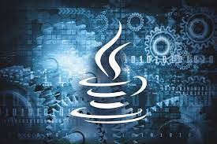
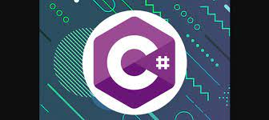
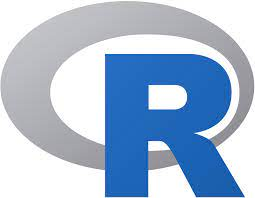

Ofereço
Phyton
Python é uma linguagem de programação de alto nível,[6] interpretada de script, imperativa, orientada a objetos, funcional, de tipagem dinâmica e forte. Foi lançada por Guido van Rossum em 1991.[1] Atualmente, possui um modelo de desenvolvimento comunitário, aberto e gerenciado pela organização sem fins lucrativos Python Software Foundation. Apesar de várias partes da linguagem possuírem padrões e especificações formais, a linguagem, como um todo, não é formalmente especificada. O padrão de facto é a implementação CPython

Java
Java é uma linguagem de programação orientada a objetos desenvolvida na década de 90 por uma equipe de programadores chefiada por James Gosling, na empresa Sun Microsystems. Em 2008 o Java foi adquirido pela empresa Oracle Corporation. Diferente das linguagens de programação modernas, que são compiladas para código nativo, a linguagem Java é compilada para um bytecode que é interpretado por uma máquina virtual (Java Virtual Machine, mais conhecida pela sua abreviação JVM). A linguagem de programação Java é a linguagem convencional da Plataforma Java, mas não é a sua única linguagem. J2ME Para programas e jogos de computador, celular, calculadoras, ou até mesmo o rádio do carro.

C#
C# é uma linguagem de programação, multiparadigma, de tipagem forte, desenvolvida pela Microsoft como parte da plataforma .NET. A sua sintaxe orientada a objetos foi baseada no C++ mas inclui muitas influências de outras linguagens de programação, como Object Pascal e, principalmente, Java. O código fonte é compilado para Common Intermediate Language (CIL) que é interpretado pela máquina virtual Common Language Runtime (CLR). C# é uma das linguagens projetadas para funcionar na Common Language Infrastructure da plataforma .NET Framework.[5]

R
R é uma linguagem de programação multi-paradigma orientada a objetos, programação funcional, dinâmica, fracamente tipada, voltada à manipulação, análise e visualização de dados. Foi criado originalmente por Ross Ihaka e por Robert Gentleman no departamento de Estatística da Universidade de Auckland, Nova Zelândia. Atualmente é mantido por uma comunidade de colaboradores voluntários[3] que contribuem com código fonte da linguagem e com a expansão de funcionalidades por bibliotecas.
